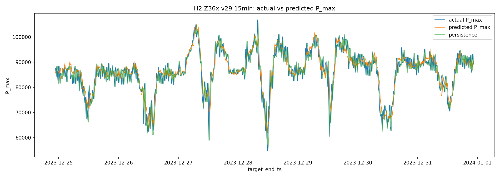
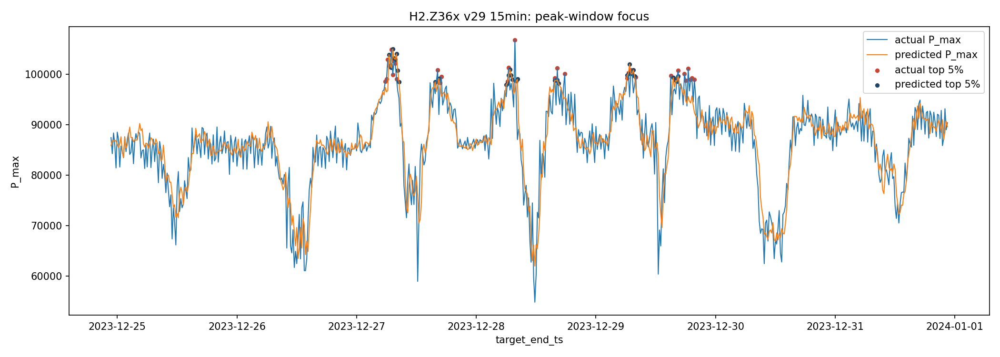
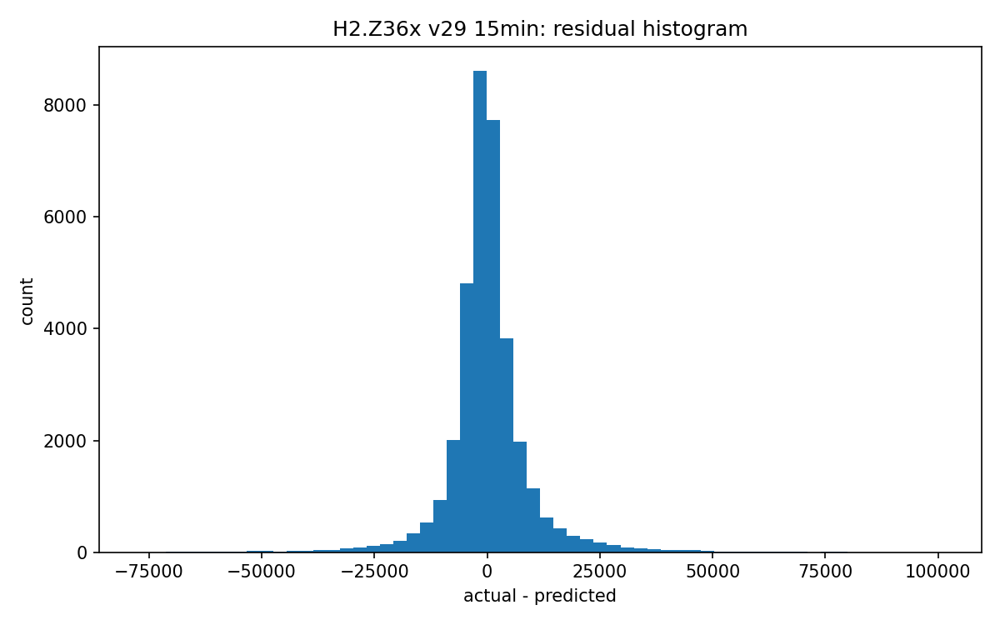

이 모델은 mart.peak_feature_15min에서 pivot한 P.max_value를 0 이상으로 보정한 import P_max를 타깃으로 사용해 다음 15min 수전 피크 전력값을 예측합니다. 입력은 과거 24시간의 15분 feature입니다.
Persistence baseline은 직전 15분 P_max를 이후 예측값으로 반복하는 기준선입니다. Test RMSE 개선율은 12.48%, MAE 개선율은 9.75%입니다.
| split | mae | rmse | mape_pct | n_values | series |
|---|---|---|---|---|---|
| train | 4489.802734 | 7125.731445 | 15.087295 | 132623 | model |
| train | 6116.812988 | 9420.226562 | 11.922472 | 132623 | persistence |
| validation | 6090.804688 | 10222.494141 | 23.016687 | 34123 | model |
| validation | 6644.290039 | 11470.052734 | 22.358042 | 34123 | persistence |
| test | 5626.732910 | 9331.376953 | 19.434471 | 35035 | model |
| test | 6234.283691 | 10661.698242 | 22.926035 | 35035 | persistence |
| metric | series | quantile | actual_threshold | candidate_threshold | precision | recall | f1 | overlap_count | actual_peak_count | candidate_peak_count | mae_minutes | median_minutes | within_15min_pct | within_30min_pct | within_60min_pct | days |
|---|---|---|---|---|---|---|---|---|---|---|---|---|---|---|---|---|
| top_5pct_peak_capture | model | 0.950 | 111752.010156 | 111105.160937 | 0.792808 | 0.792808 | 0.792808 | 1389.0 | 1752.0 | 1752.0 | NaN | NaN | NaN | NaN | NaN | NaN |
| top_5pct_peak_capture | persistence | 0.950 | 111752.010156 | 111752.010156 | 0.768265 | 0.768265 | 0.768265 | 1346.0 | 1752.0 | 1752.0 | NaN | NaN | NaN | NaN | NaN | NaN |
| top_3pct_peak_capture | model | 0.975 | 119827.870703 | 118841.042578 | 0.777397 | 0.777397 | 0.777397 | 681.0 | 876.0 | 876.0 | NaN | NaN | NaN | NaN | NaN | NaN |
| top_3pct_peak_capture | persistence | 0.975 | 119827.870703 | 119827.870703 | 0.750000 | 0.750000 | 0.750000 | 657.0 | 876.0 | 876.0 | NaN | NaN | NaN | NaN | NaN | NaN |
| top_1pct_peak_capture | model | 0.990 | 127892.156094 | 127094.207969 | 0.615385 | 0.615385 | 0.615385 | 216.0 | 351.0 | 351.0 | NaN | NaN | NaN | NaN | NaN | NaN |
| top_1pct_peak_capture | persistence | 0.990 | 127892.156094 | 127892.156094 | 0.603989 | 0.603989 | 0.603989 | 212.0 | 351.0 | 351.0 | NaN | NaN | NaN | NaN | NaN | NaN |
| daily_t_plus_1_peak_time | model | NaN | NaN | NaN | NaN | NaN | NaN | NaN | NaN | NaN | 198.328767 | 45.0 | 31.506849 | 47.671233 | 61.643836 | 365.0 |
| daily_t_plus_1_peak_time | persistence | NaN | NaN | NaN | NaN | NaN | NaN | NaN | NaN | NaN | 15.904110 | 15.0 | 98.904110 | 98.904110 | 99.178082 | 365.0 |
| metric | series | quantile | actual_threshold | candidate_threshold | precision | recall | f1 | overlap_count | actual_peak_count | candidate_peak_count | mae_minutes | median_minutes | within_15min_pct | within_30min_pct | within_60min_pct | days |
|---|---|---|---|---|---|---|---|---|---|---|---|---|---|---|---|---|
| top_5pct_peak_capture | model | 0.95 | 111752.010156 | 111105.160937 | 0.792808 | 0.792808 | 0.792808 | 1389.0 | 1752.0 | 1752.0 | NaN | NaN | NaN | NaN | NaN | NaN |
| top_5pct_peak_capture | persistence | 0.95 | 111752.010156 | 111752.010156 | 0.768265 | 0.768265 | 0.768265 | 1346.0 | 1752.0 | 1752.0 | NaN | NaN | NaN | NaN | NaN | NaN |
| metric | series | quantile | actual_threshold | candidate_threshold | precision | recall | f1 | overlap_count | actual_peak_count | candidate_peak_count | mae_minutes | median_minutes | within_15min_pct | within_30min_pct | within_60min_pct | days |
|---|---|---|---|---|---|---|---|---|---|---|---|---|---|---|---|---|
| daily_t_plus_1_peak_time | model | NaN | NaN | NaN | NaN | NaN | NaN | NaN | NaN | NaN | 198.328767 | 45.0 | 31.506849 | 47.671233 | 61.643836 | 365.0 |
| daily_t_plus_1_peak_time | persistence | NaN | NaN | NaN | NaN | NaN | NaN | NaN | NaN | NaN | 15.904110 | 15.0 | 98.904110 | 98.904110 | 99.178082 | 365.0 |
| method | candidate_version | validation_rmse | weight |
|---|---|---|---|
| v29 | v16 | 10880.214844 | 0.000000 |
| v29 | v20 | 10329.465820 | 0.175975 |
| v29 | v23 | 10336.850586 | 0.175130 |
| v29 | v25 | 10284.293945 | 0.427330 |
| v29 | v27 | 10435.919922 | 0.221566 |
{
"table": "mart.peak_feature_15min",
"logical_meter": "H2.Z36x",
"target": "import P_max = max(measurement='P'.max_value, 0)",
"input_hours": 24,
"output_range": "15min",
"horizon_steps": 1,
"step_minutes": 15,
"feature_columns": [
"P_mean",
"P_max",
"P_std",
"U1_mean",
"PF_mean",
"Ta_mean",
"Igm_mean",
"hour_sin",
"hour_cos",
"dayofweek_sin",
"dayofweek_cos",
"month_sin",
"month_cos",
"is_weekend",
"is_business_hour",
"is_morning_ramp",
"is_lunch_time",
"is_evening",
"P_max_lag_1",
"P_max_lag_2",
"P_max_lag_4",
"P_max_lag_8",
"P_max_lag_96",
"P_max_lag_192",
"P_max_roll_1h_mean",
"P_max_roll_1h_max",
"P_max_roll_1h_std",
"P_max_roll_3h_mean",
"P_max_roll_3h_max",
"P_max_roll_6h_mean",
"P_max_roll_24h_max",
"P_max_diff_1",
"P_max_diff_4",
"P_mean_diff_1",
"U1_mean_diff_1",
"PF_mean_diff_1"
],
"candidate_versions": [
"v16",
"v20",
"v23",
"v25",
"v27"
],
"best_single_candidate": "v25",
"training_device": "gpu",
"max_fit_windows": 10000,
"split_policy": "train=2018-2021, validation=2022, test=2023 by target timestamp",
"dropped_rows": 5390,
"skipped_windows": 0,
"method": "v29"
}


